ザ・ガーデン自由が丘

津田沼駅内にあるスーパーマーケット、「ザ・ガーデン自由ヶ丘ペリエ津田沼店」。季節の商品や限定商品など、いつ来ても楽しい売り場。駅中ならではの「ちょっと欲しい商品」も取り揃えています。

ビールやサワー、焼酎、日本酒など置いてあります。種類は少ないですが、帰宅のついでによってお酒を買う場所としてはGood!
ーーーーーーーーーーーーーーーー
＜営業時間＞AM8:00～PM10:00
（土曜・日曜・祝日
AM8:00～PM9:00）
＜TEL＞ 047-403-7191
＜FAX＞ 047-403-7192
＜住所＞千葉県習志野市
津田沼1-1-1
ペリエ津田沼 改札内
ーーーーーーーーーーーーーーーー
河内屋
津田沼店
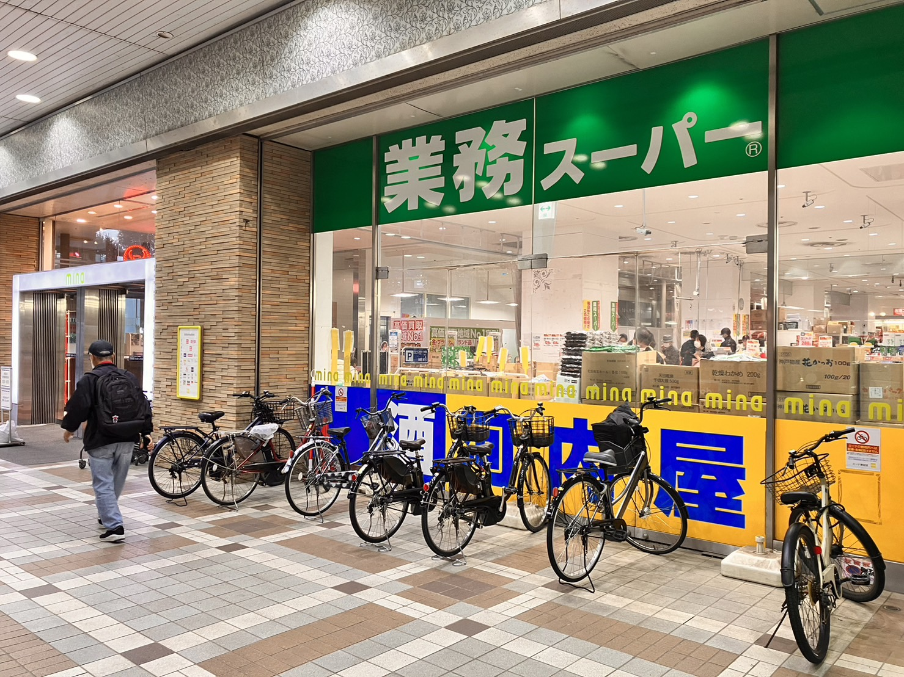
JR総武線「津田沼駅」北口より徒歩5分、新京成線「新津田沼駅」から徒歩2分以内にあるショッピングモール「mina」の1階にある「河内屋」。業務スーパーの中にあるため普段の買い物にも便利です。
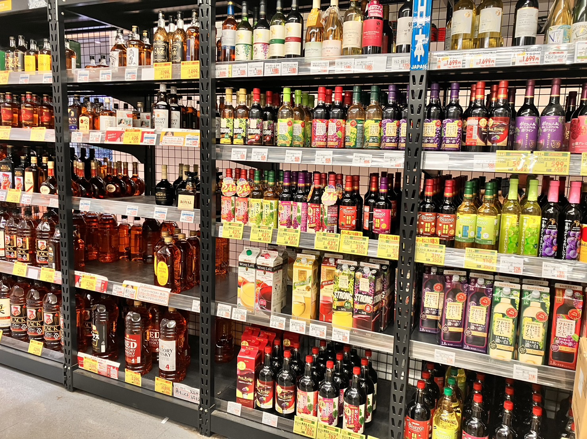
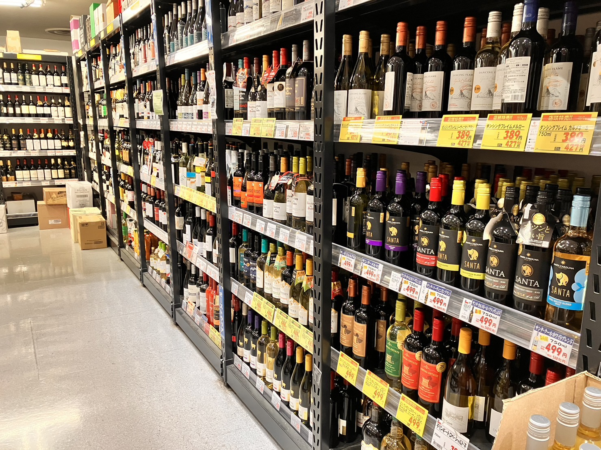
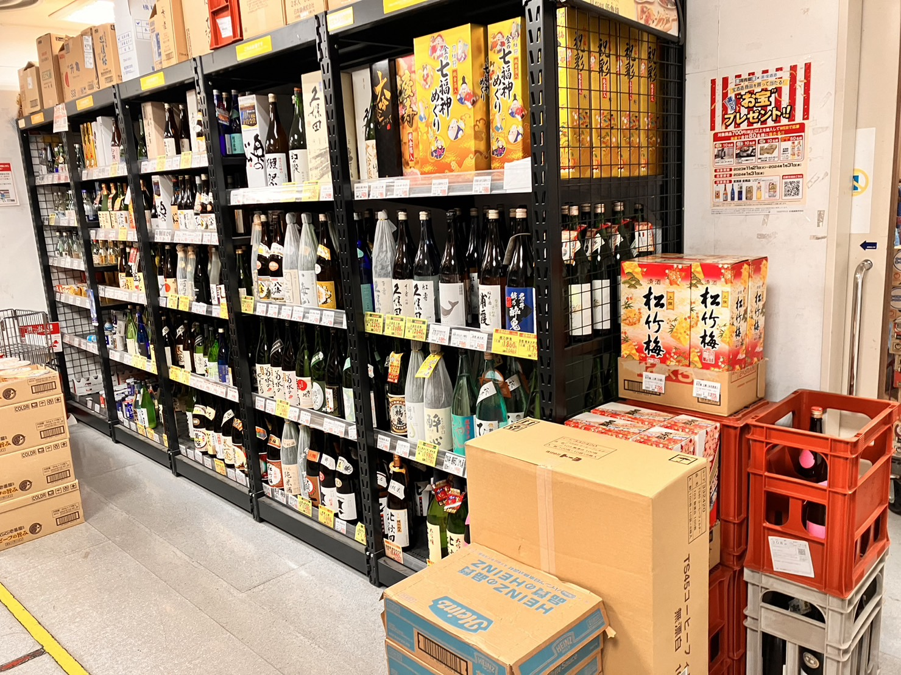
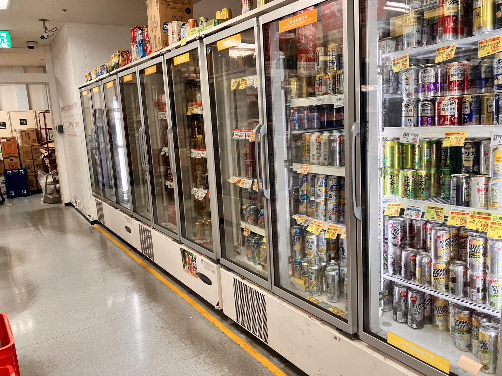
さすが業務スーパーと言える程の種類の豊富さ！缶類は基本冷えています。瓶は冷えていませんが、とても種類が多くて見るのに一苦労しそうです💦ただ、お酒好きにはたまらない品揃えになっています。
ーーーーーーーーーーーーーーーー
＜営業時間＞AM10:00～PM10:00
＜TEL＞047-476-6151
＜住所＞千葉県習志野市
津田沼1-3-1
ミーナ津田沼1F
ーーーーーーーーーーーーーーーー
KALDI
COFFEE FARM
イオンモール津田沼店
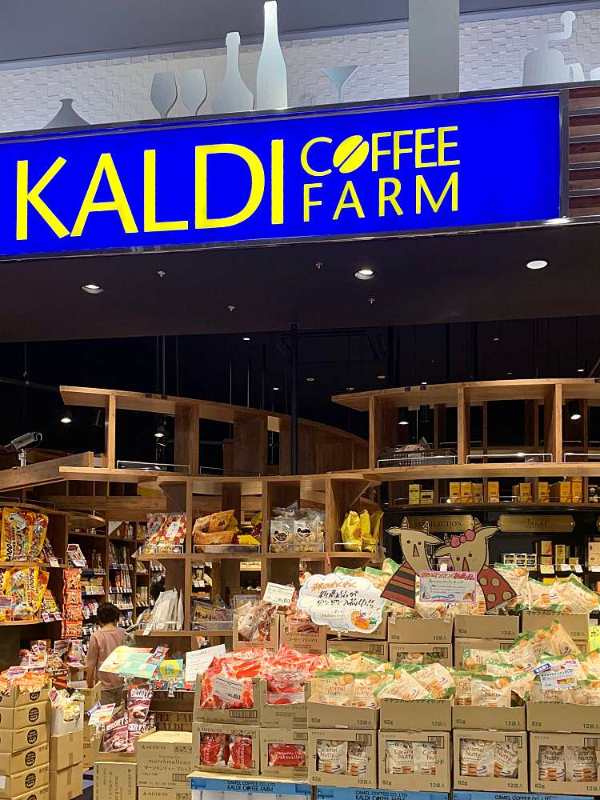
JR総武線「津田沼駅」北口より徒歩3分、新京成線「新津田沼駅」から徒歩3分以内にあるショッピングモール「イオンモール津田沼店」の1階、Food Streetにある「KALDI COFFEE FARM」。洋服や娯楽施設、スーパーがあり、とても便利な場所です。スーパーは24時間営業のため、深夜帰りのお酒にぴったり😍
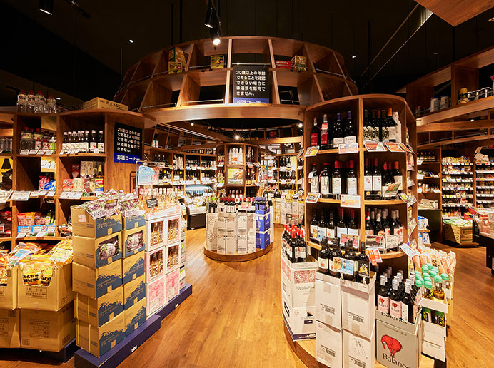
その中でもワイン好きな方におすすめなのがKALDI COFFEE FARM。お店に置いてあるお酒の8割はなんとワイン！赤ワインはもちろん、白ワインも置いてあるためワイン好きな方はまさに楽園です💖もちろんワインに合うおつまみも取り揃えてあり、とってもおすすめです！
ーーーーーーーーーーーーーーーー
＜営業時間＞AM10:00～PM9:00
＜TEL＞047-455-6238
＜住所＞千葉県習志野市
津田沼1-23-1
イオンモール津田沼1F
Food Street
ーーーーーーーーーーーーーーーー
金二商事（株）
セブンイレブン
津田沼店
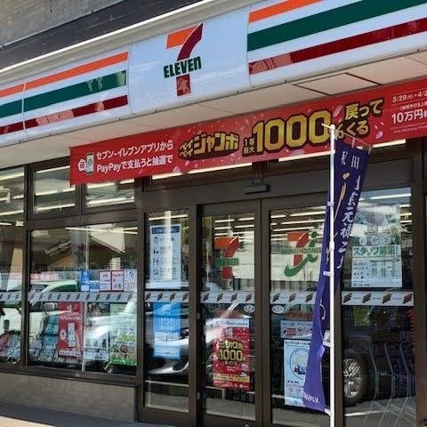
京成線「京成津田沼駅」から徒歩7分にあるコンビニエンスストア「セブンイレブン津田沼店」にある「金二商事」。外見は何の変哲もないセブンイレブン。しかし、中に入って見ると...
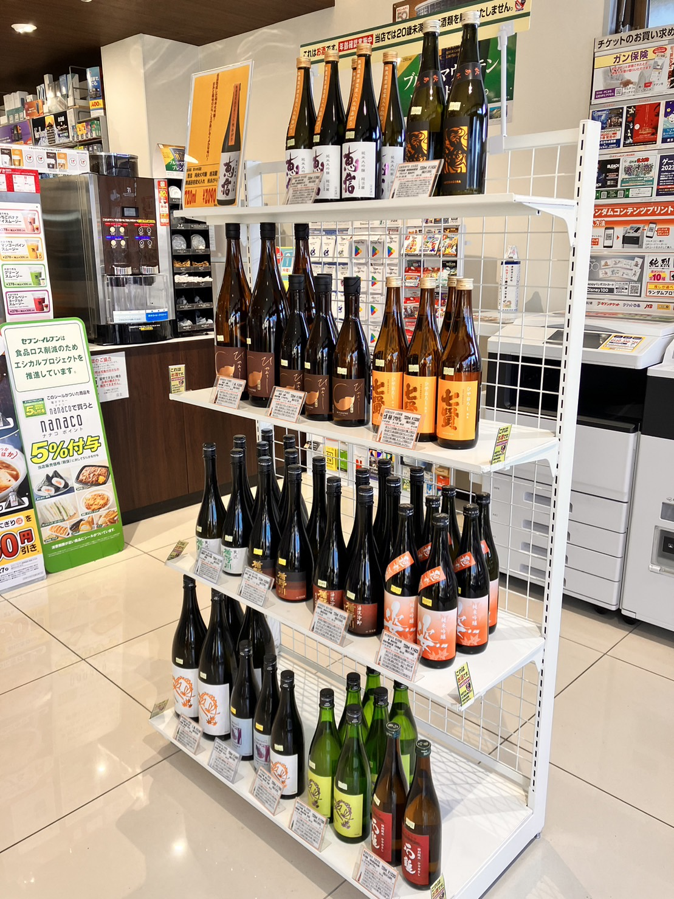
入ってすぐにお酒がお出迎え！
「えぇ！そんなコンビニある！？」
さらに奥に行くと...
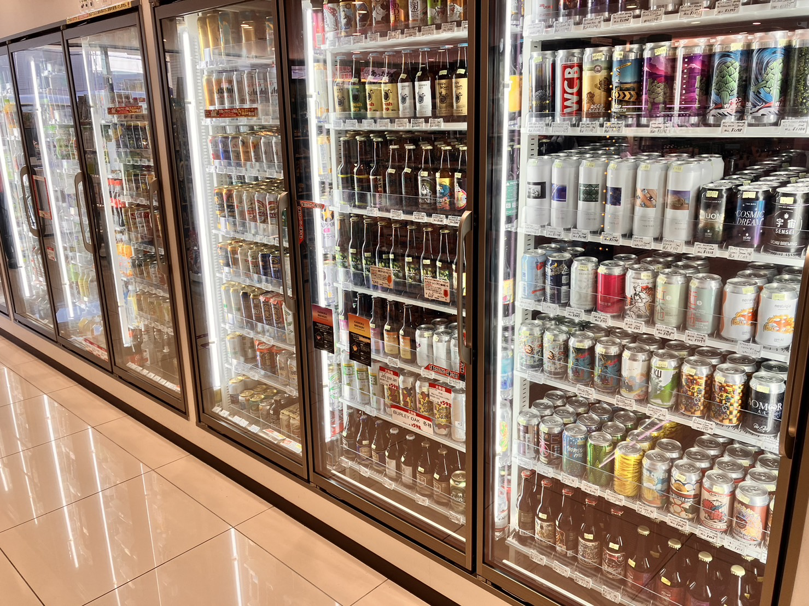
なんといつもお酒が置いてある冷蔵庫に倍以上の種類のお酒が置いてあります！
確か、棚にも置いてあったような...
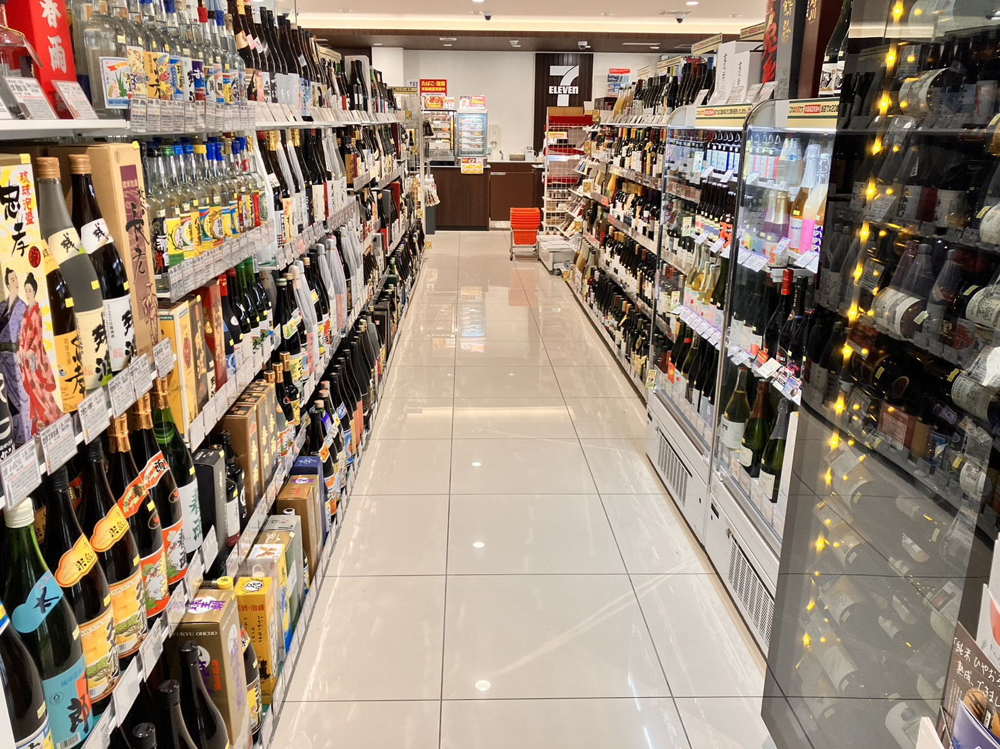
「えぇー！こんなにあるのぉ！！ん？てか、」
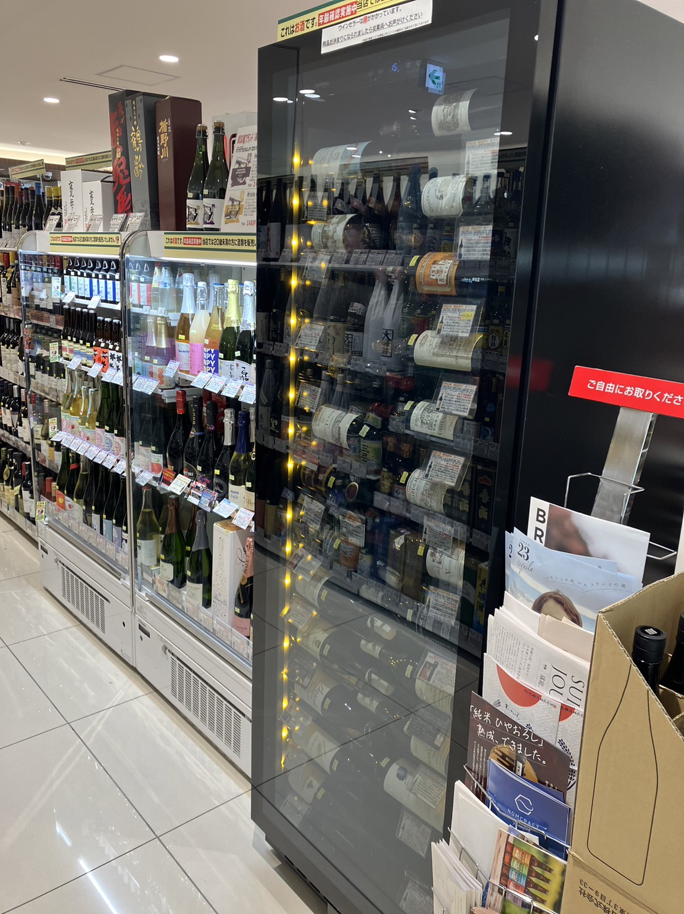
「ワインセラーあんのかよ！！」
他にも...
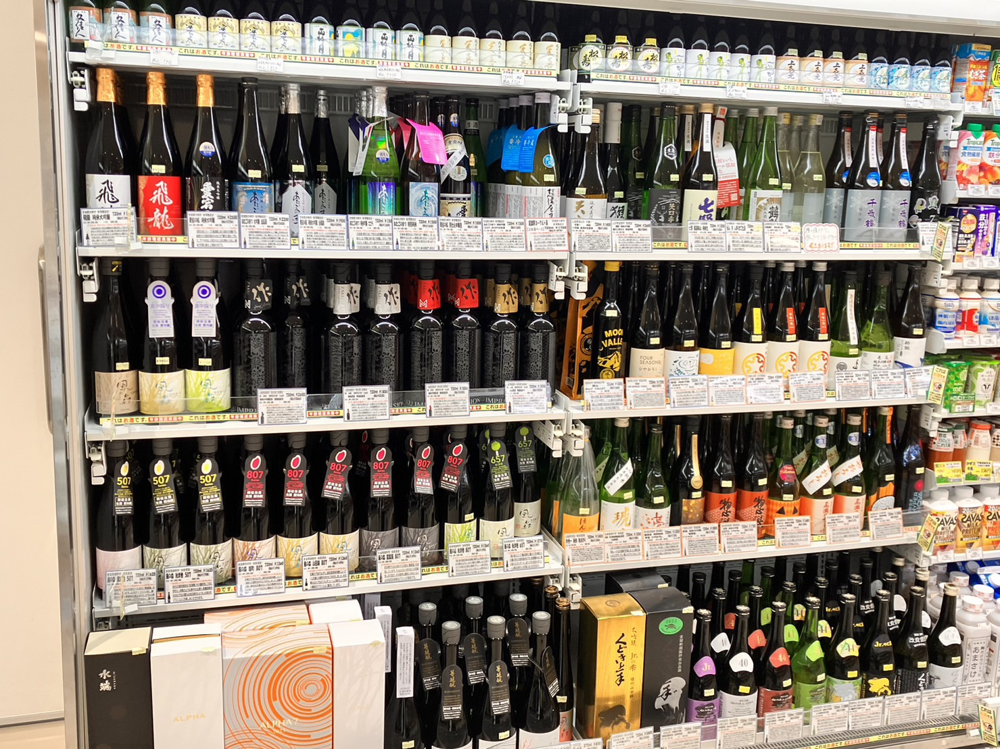
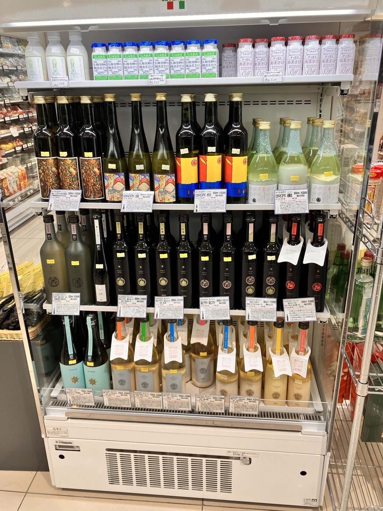
お酒好きには夢のコンビニエンスストア！手軽に買えるなんてまさにconvenienceですね。
こんなセブンイレブン見たことありますか？見たことないですよね。
だってこのセブンイレブンは唯一無二のセブンイレブンですからね！
ーーーーーーーーーーーーーーーー
＜営業時間＞24時間営業
＜TEL＞047-452-0121
＜住所＞千葉県習志野市
津田沼6-13-9
セブンイレブン津田沼店
ーーーーーーーーーーーーーーーー
新宅酒店
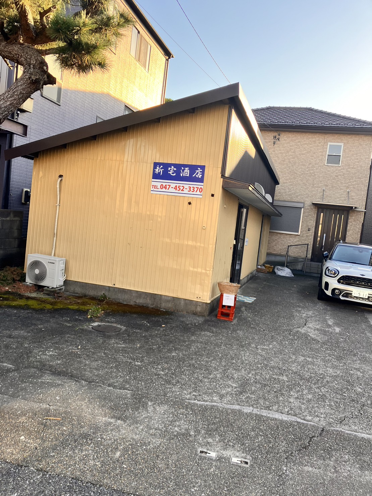
京成線「京成津田沼駅」から徒歩6分にある「新宅酒店」。写真の通り、見やすい位置に看板があるためとってもわかりやすいです。
お酒の品揃えは焼酎や日本酒、瓶ビールなどの瓶系を置いてあります。他にもおせんべいやカップ麺もおいてあります。
ーーーーーーーーーーーーーーーー
＜営業時間＞AM9:00～PM5:30
(定休日:日曜日)
＜TEL＞047-452-3370
＜住所＞千葉県習志野市
津田沼6-13-19
ーーーーーーーーーーーーーーーー